既にある団体に参加したい場合は、トップ画面の「参加申請」から申請します。
参加したい団体を選び、氏名・連絡先・希望内容などを入力して送信してください。
申請後、団体の管理者が内容を確認し、承認されると団体ページを利用できるようになります。
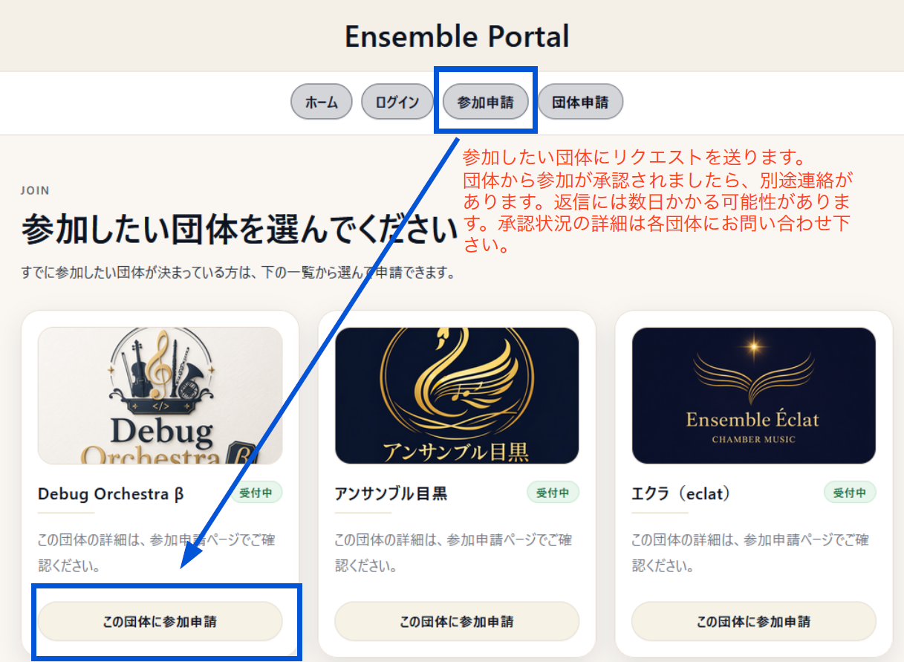
承認後、メールアドレスとパスワードを入力してログインします。
パスワードが見えにくい場合は「表示」ボタンを押すと、入力内容を確認できます。
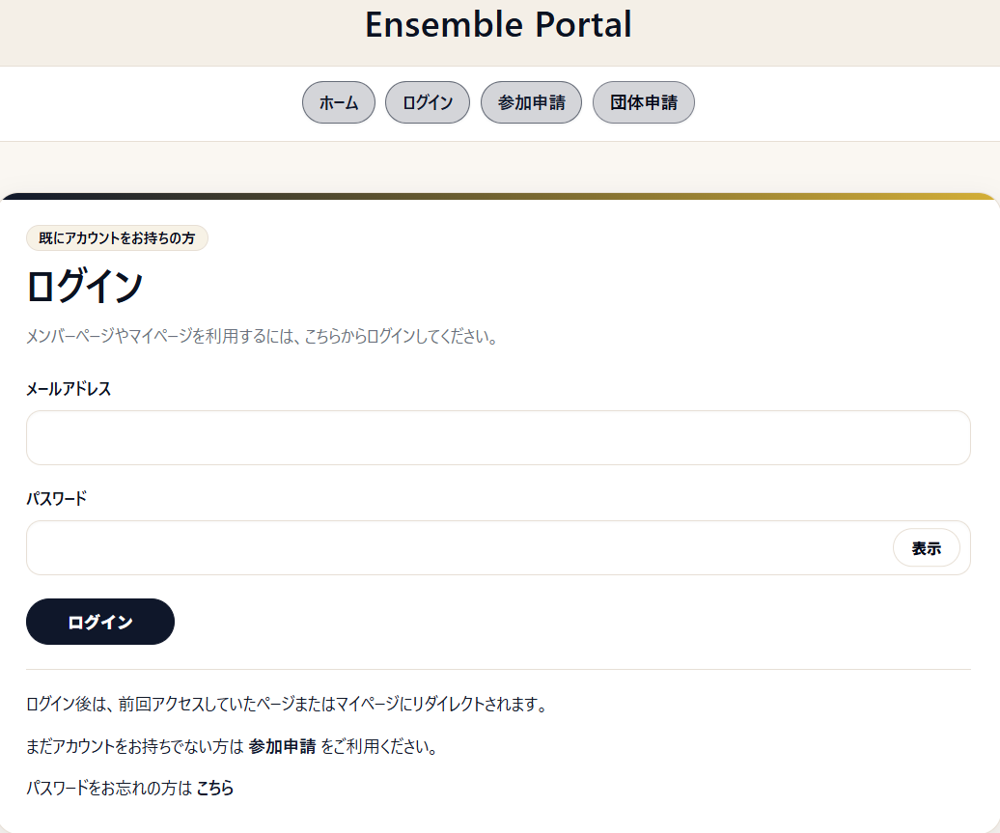
ホーム画面では、掲示板のお知らせとカレンダーから今後の予定を確認できます。
「前月」「翌月」でカレンダーを切り替えられます。
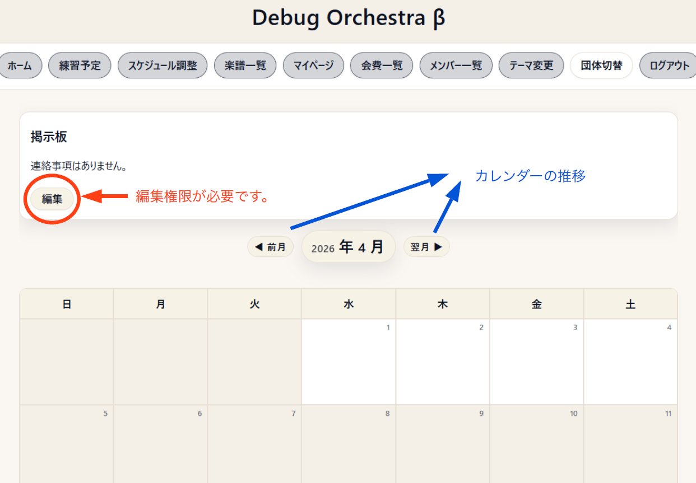
マイページでは、パスワード変更、プロフィール編集、練習の出欠登録状況を確認できます。
団体によっては、会費情報やサポーター情報もここに表示されます。
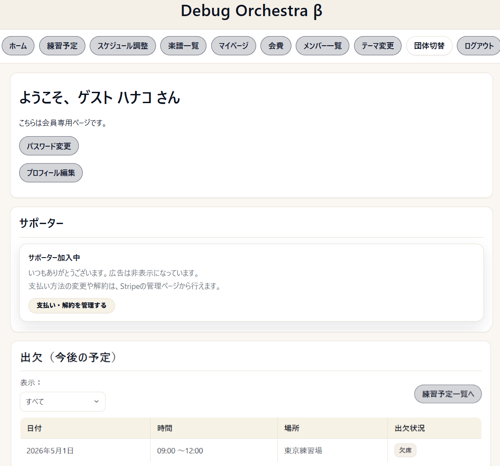
練習予定一覧では、今後の予定・過去の予定を確認できます。
日付、時間、場所、曲目を確認し、出欠登録は「登録/変更」から行います。
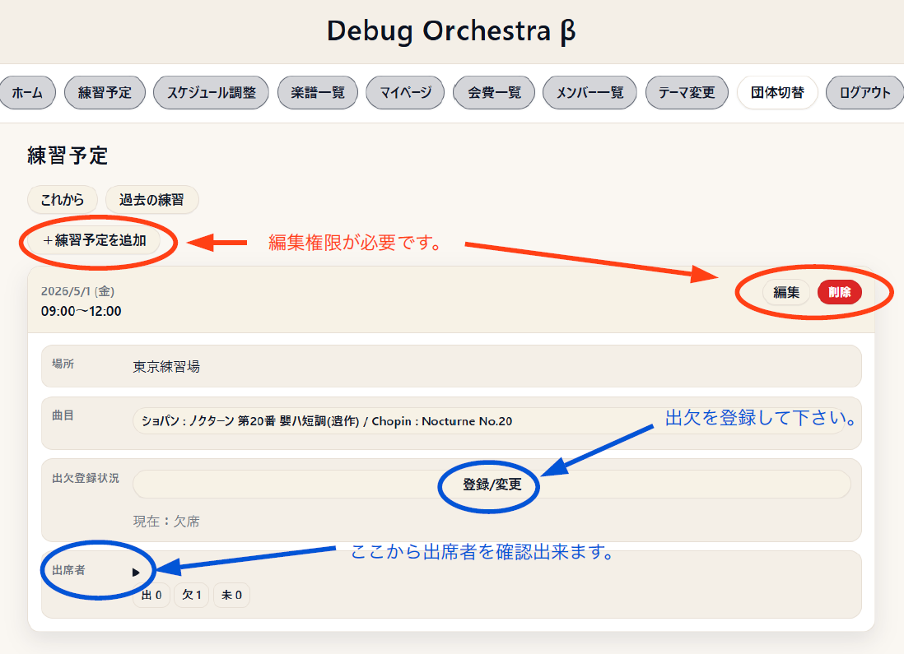
練習予定ごとに「出席・欠席・未定」を選択して保存します。
登録後は一覧画面に反映されます。あとから変更することもできます。
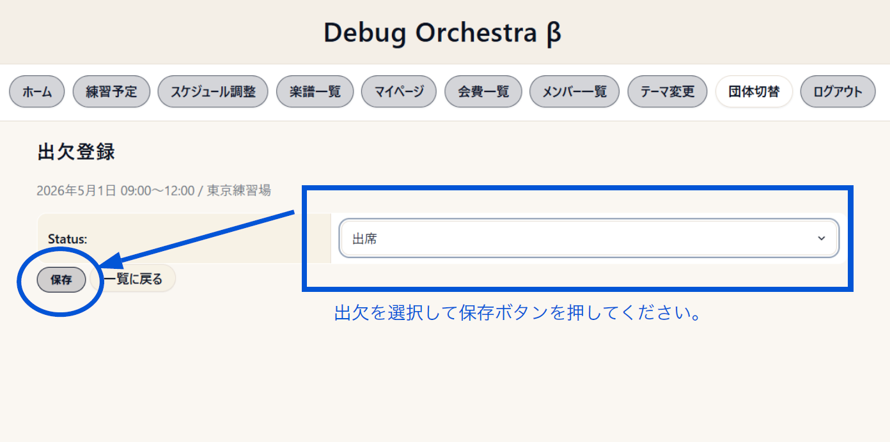
楽譜一覧では、タイトルやパート名で検索できます。
一般メンバーはPDFをダウンロードできます。楽譜アップロード・編集・削除は編集権限が必要です。
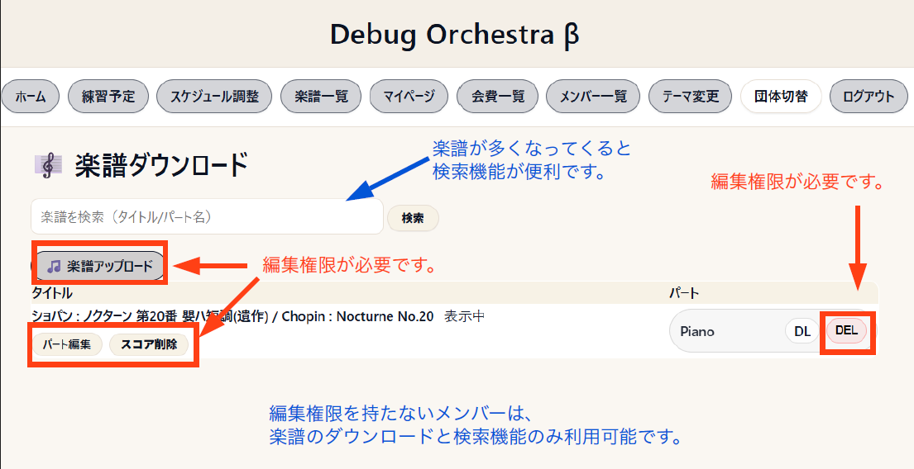
新しく団体を作る場合は、先にアカウント作成が必要です。
トップ画面の「団体申請」をクリックすると、アカウント未作成の場合はこの画面が表示されます。
氏名・メールアドレス・パスワードを入力して、アカウントを作成してください。
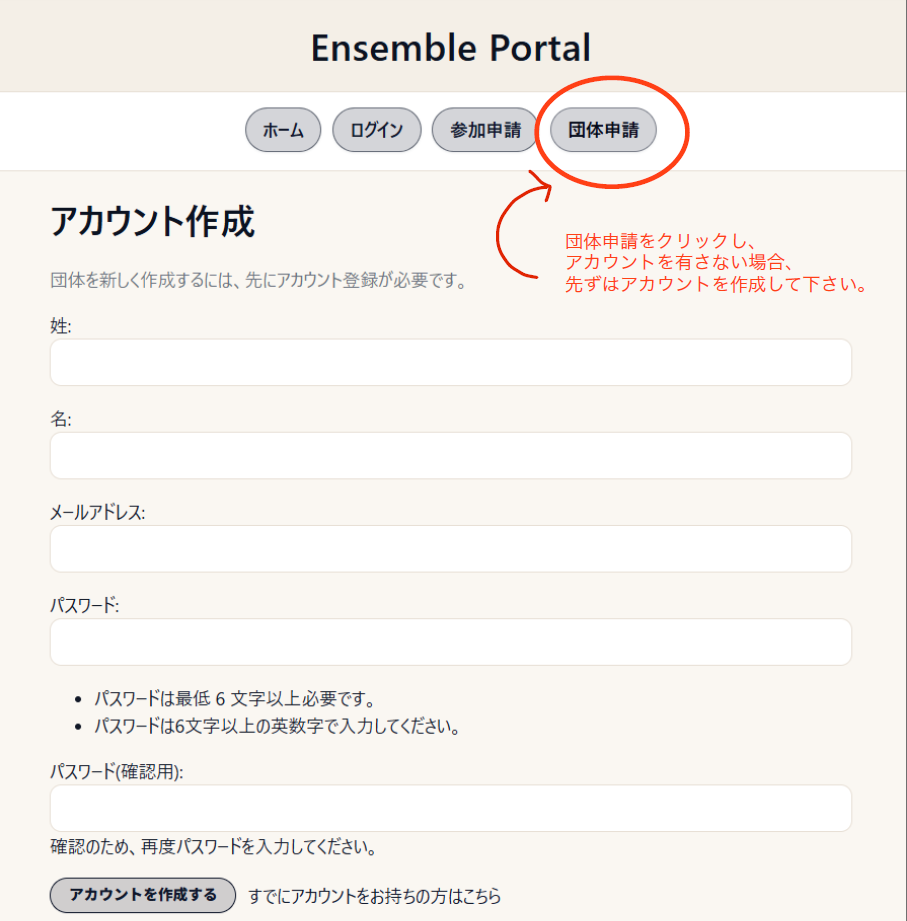
アカウント作成後、団体作成画面が表示されます。
団体名・団体URL名を入力し、必要に応じて公開設定を選択して「作成する」を押します。
団体を作成した人は、自動的にオーナー権限を持つ管理者になります。
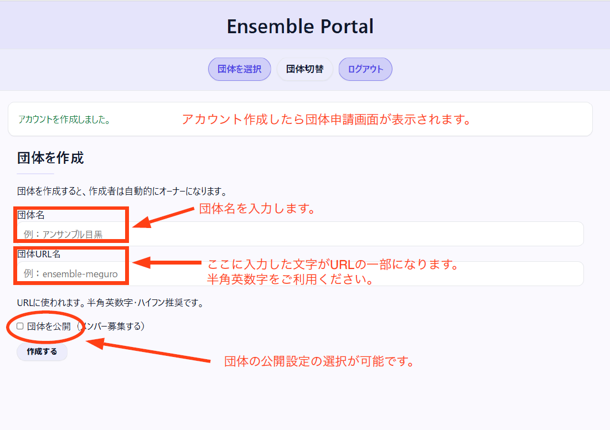
練習予定の追加は、権限を持つ管理者・編集者が行えます。
日付・時間・場所・曲目を入力して練習予定を登録します。曲目は楽譜一覧から選ぶことも、自由入力することも可能です。
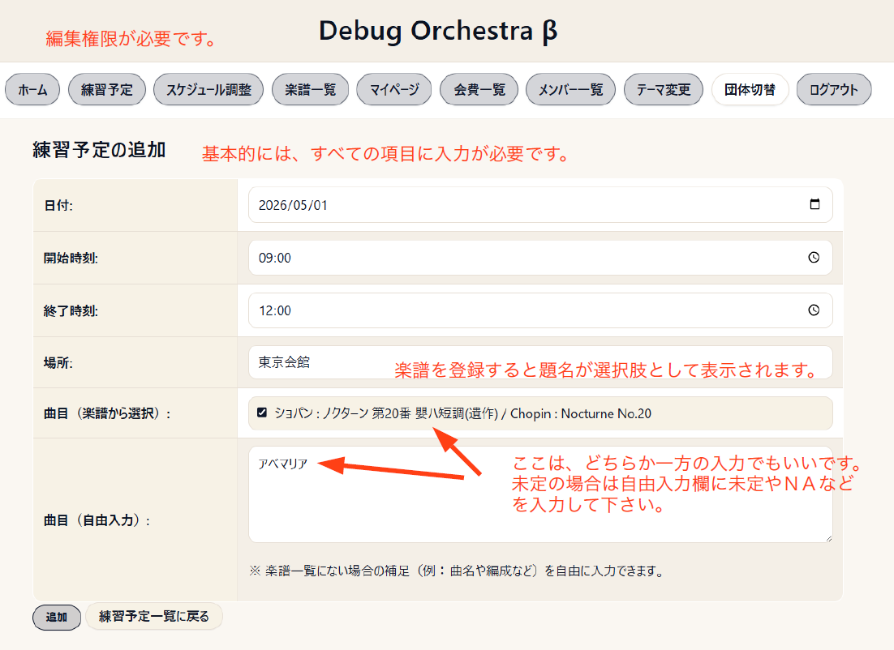
楽譜アップロードは、権限を持つ管理者・編集者が行えます。
曲名を登録し、各パート譜のPDFをアップロードします。パート名や表示順を設定することで、見やすく整理できます。
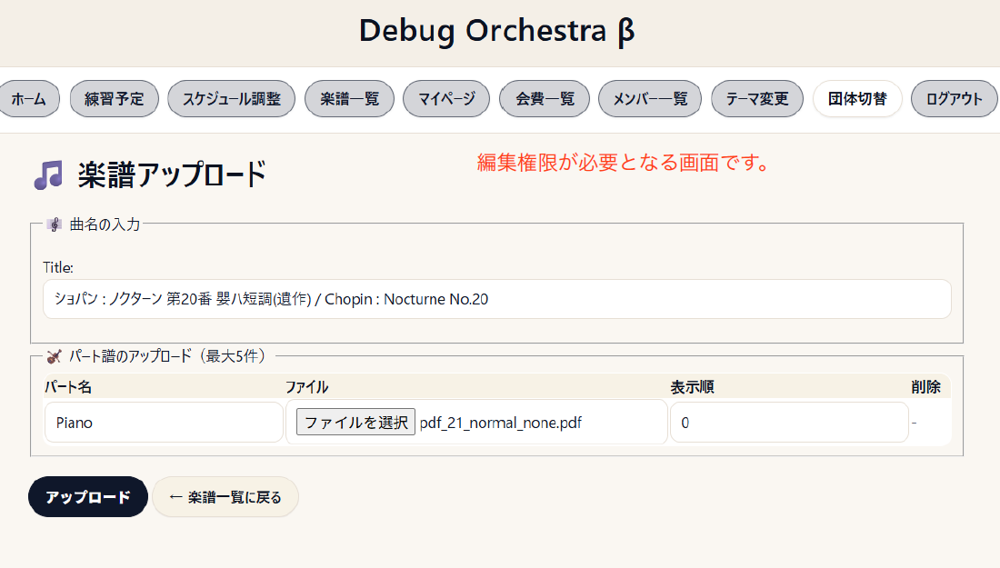
オーナー相当の権限を持つ人は、管理（申請・権限）画面にアクセスできます。
入会希望者の確認、承認、各メンバーへの機能付与をここで行います。
各種機能は、オーナーまたはアドミン権限を持つ人が付与した場合に編集できるようになります。
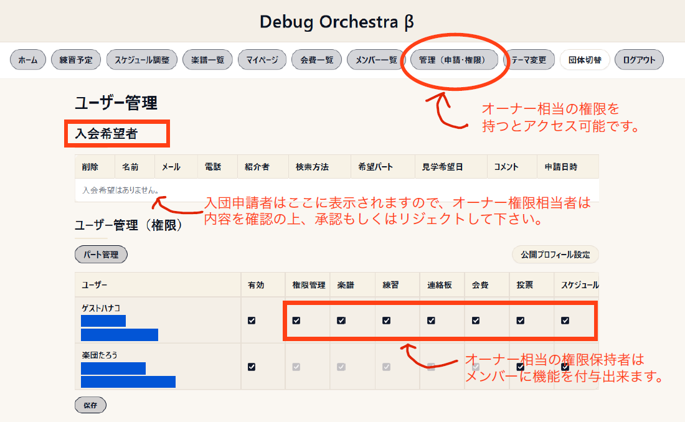